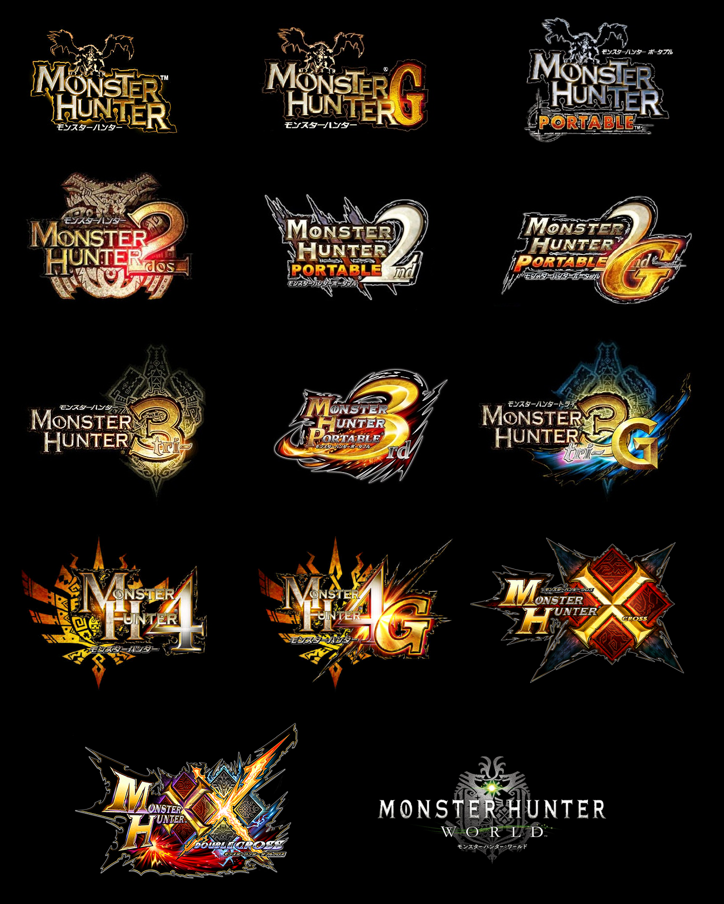

The franchise
Monster Hunter is a media franchise centered around a series of fantasy-themed action role-playing video games that started with the game Monster Hunter for PlayStation 2,released in 2004. Titles have been released across a variety of platforms, including personal computers, home consoles, portable consoles, and mobile devices.The series is developed and published by Capcom.
The games are primarily action role-playing games. The player takes the role of a Hunter, slaying or trapping large monsters across various landscapes as part of quests given to them by locals, with some quests involving the gathering of a certain item or items, which may put the Hunter at risk of facing various monsters. As part of its core gameplay loop, players use loot gained from slaying monsters, gathering resources, and quest rewards to craft improved weapons, armor, and other items that allow them to face more powerful monsters. All main series titles feature multiplayer (usually up to four players cooperatively), but can also be played single player.
As of March 31, 2021, the game series has sold 72 million units worldwide, and is Capcom's second best-selling series following Resident Evil. The early games in the series principally sold well in Japan and other Asian countries, popularized by the series' use of ad hoc multiplayer features on portable consoles. Monster Hunter has been critically well-received in Western markets, but had generally languished in sales, in part due to the game's steep learning curve. However, with Monster Hunter: World (2018), Capcom aimed to attract a global audience using the power of advanced home gaming consoles and computers and released the title simultaneously worldwide. World became the best-selling Monster Hunter game within three days of its release, and became Capcom's single best-selling video game of all time with 17.2 million sales as of March 31, 2021, including more than 70% outside of Japan.
In addition to games, the franchise has an anime based on the spinoff game Monster Hunter Diary: Poka Poka Airou Village, Monster Hunter Stories: Ride On based on the spinoff title Monster Hunter Stories, a manga Monster Hunter Orage, and a book Monster Hunter Episode. A feature film directed by Paul W. S. Anderson was released on December 3, 2020.

All of the main Monster Hunter games in chronological order:
- Monster Hunter
- Monster Hunter 2
- Monster Hunter Tri
- Monster Hunter 4
- Monster Hunter: World
- Monster Hunter: Rise
All of the spinoffs, remasters and expansions in chronological order
- Monster Hunter Frontier Online / Monster Hunter Frontier Z
- Monster Hunter Diary: Poka Poka Airou Village
- Monster Hunter Dynamic Hunting
- Monster Hunter: Frontier G
- Monster Hunter Online
- Monster Hunter Spirits
- Monster Hunter Explore
- Monster Hunter Generations
- Monster Hunter Stories
- Monster Hunter World: Iceborne
- Monster Hunter Riders
- Monster Hunter Stories 2: Wings of Ruin
Készítette: Flórika Barnabás